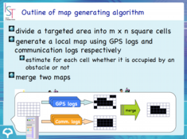

Disaster Mitigation using IT Technology
Map Estimation in Disaster Areas
Large accidents and disasters in crowded regions such as business districts and universities may create a large number of patients, and first responders need to recognize the presence and location of buildings for their efficient rescue operations. In our project, we propose an algorithm to estimate the two-dimensional (2D) shapes and positions of buildings, simultaneously using GPS logs and wireless communication logs of mobile nodes. The algorithm only needs general wireless devices such as smartphones. The results from the experiments have shown that the proposed method could quickly generate a map with 85% accuracy. The related paper was presented in Pervasive Computing and Communications (PerCom) 2010 Conference, and its full version has been published as a selected paper of Special Issue (Vol.6, No.6, 2010) from PerCom 2010 on Pervasive and Mobile Computing (PMC).

{kind=link}
{kind=link}
Electronic Triage Simulator
We have developed a simulator for our electronic triage system, and some medical staffs and DMAT (Disaster Medical Assistant Team) have tried it. The simulator reproduces a series of emergency care procedures such as triage at disaster areas, conveyance of patients to emergency hospitals and medical treatment in the emergency hospitals on PC terminals. It can reproduce several types of wounded persons and specify change of their vital signs in advance depending on whether suitable medical treatments are given before time limits. Using those functions, multiple medical staffs can experience rescue operations by joining its role-playing game.
{kind=link}
{kind=link}
Rescue Support System using AR Technology
We are planning to design several types of scenarios for accidents and disasters in underground cities and shopping quarters and reproduce those situations in 3D maps of urban districts (e.g. Osaka Station Square) using AR technologies. The rescue support system can reproduce not only pedestrian/vehicular mobility in normal situations but also typical behaviors of evacuees when accidents and disasters occur. By combining this system with network simulators, we can evaluate the efficacy of evacuation guidances obtained from smartphones.
{kind=link}
[Selected Papers]
T. Higashino, A. Uchiyama, K. Yasumoto : "eTriage: A Wireless Communication Service Platform for Advanced Rescue Operations", Proc. of ACM Workshop on Internet of Things and Service Platforms (IoTSP 2011), 2011. (Invited Paper/Keynote Speech)
S. Minamimoto, S. Fujii, H. Yamaguchi and T. Higashino : "Map Estimation Using GPS-equipped Mobile Wireless Nodes", Pervasive and Mobile Computing, Vol.6, No.6, pp.623-641, 2010.
S. Minamimoto, S. Fujii, H. Yamaguchi and T. Higashino : "Local Map Generation using Position and Communication History of Mobile Nodes", Proc. of 8th Annual IEEE Int. Conf. on Pervasive Computing and Communications (IEEE PerCom 2010), pp.2-10, 2010.
D. Nogami, A. Uchiyama, Y. Nakata, T. Higashino : "Proposal of a Multi-player Simulator for Training in Electronic Triage System", Proc. of 10th Asia Pacific Conference on Disaster Medicine, p.215, 2010.
K. Nakata, K. Maeda, T. Umedu, A. Hiromori, H. Yamaguchi and T. Higashino : "Modeling and Evaluation of Rescue Operations using Mobile Communication Devices", Proc. of 23rd ACM/IEEE/SCS Workshop on Principles of Advanced and Distributed Simulation (PADS 2009), pp.64-71, 2009.
{kind=link}
S. Minamimoto, S. Fujii, H. Yamaguchi and T. Higashino : "Map Estimation Using GPS-equipped Mobile Wireless Nodes", Pervasive and Mobile Computing, Vol.6, No.6, pp.623-641, 2010. (Selected Paper from Pervasive Computing and Communications (PerCom) 2010 Conference)
(Abstract) Large accidents and disasters in crowded regions such as business districts and universities may create a large number of patients, and first responders need to recognize the presence and location of buildings for their efficient rescue operations. In this paper, we propose an algorithm to estimate the two-dimensional (2D) shapes and positions of buildings simultaneously using GPS logs and wireless communication logs of mobile nodes. The algorithm is easy to implement since it only needs general wireless devices such as smartphones. The results from the experiments conducted assuming rescue operation scenarios have shown that the proposed method could quickly generate a map with 85% accuracy.